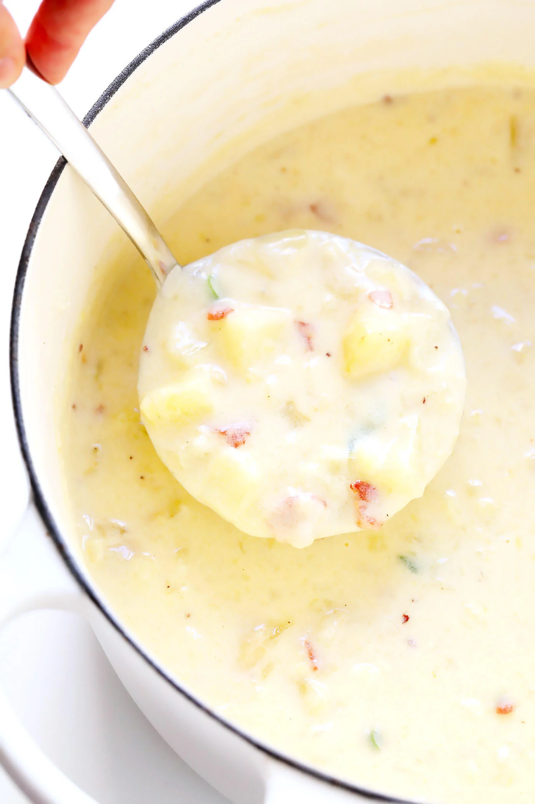

Potato Soup

This is a recipe for potato soup. There isn't much to this recipe.
My mother used to come home drunk and beat me sensless, and then make this
soup, and it used to bring me great comfort.
Ingredients
- 4 Cups Whole Milk
- 2 Cups Half and Half
- Water
- Flour
- Salt
- Pepper
- 8 Cups Potatoes
- 1 Stick Butter
- 1/2 Onion
Instructions
- Melt the butter in a soup pot
- Add the onion and cook until the onion is transluscent
- Sprinkle in 1 TBS flour and brown
- Slowly add 1 Cup water and whisk aggressivley until all
water is added
- You have your roux!
- add cubed potatoes and cover with water
- Let this simmer until the potatoes are cooked through
- After the potatoes are cooked, add the milk
- Bring the soup back up to boiling, and prepare the riblets
- For riblets, mix flour and water until you have a batter
roughly the consistency of packcake batter
- Every minute, drop one heaping spoonful of batter into the boiling soup
- After all the batter is gone, add the half and half
- Bring back up to temp, but be careful not to boil! The Half and Half will curdle
- Fini! Now eat!
Back to All Recipes